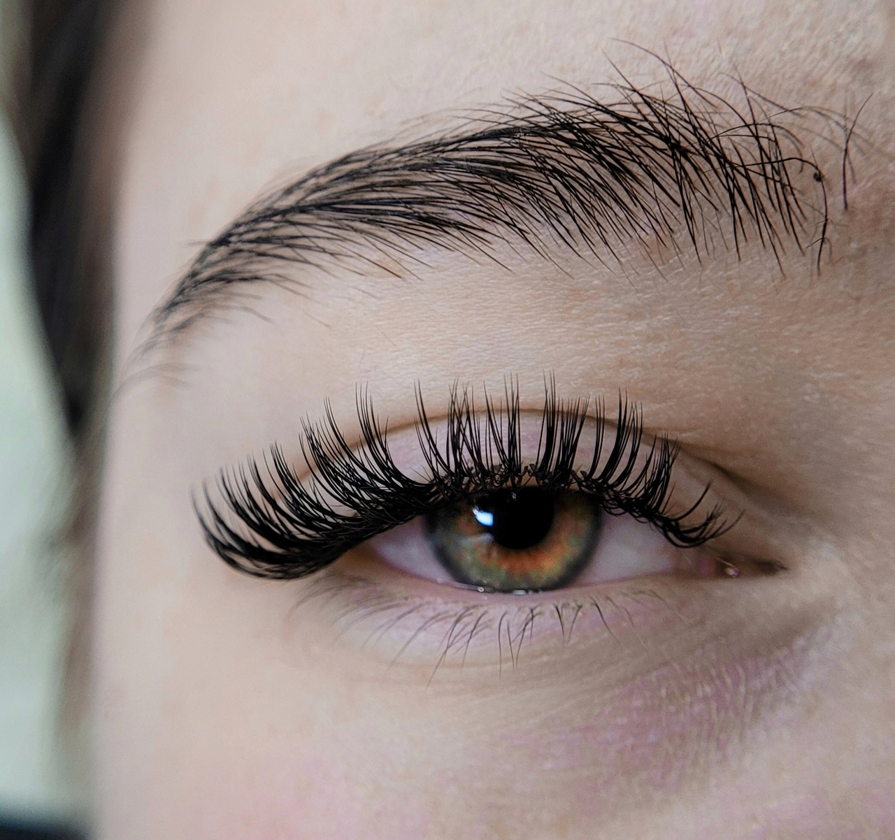
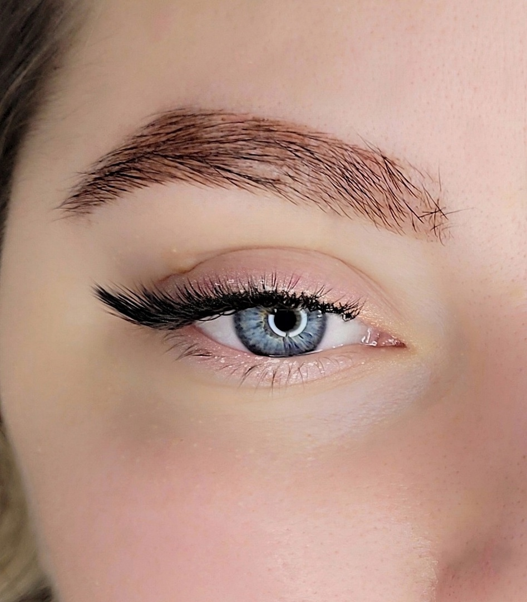
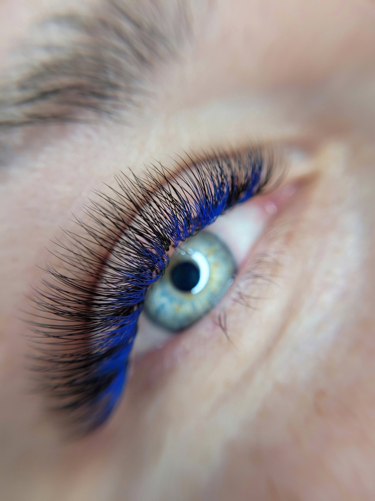

До курса у Марии Потаповой, из Кстово, не было клиентов и доходов, она только окончила обучение на наращивание ресниц. После прохождения курса "ВК Бабло" Мария смогла привлечь первых клиентов и создать стабильный доход.
Сейчас она зарабатывает в 3-5 раз больше, чем на предыдущей работе, и полностью посвятила себя своему делу. За последний год её доход составил 510 000 рублей. Заработок стабильно растет. В среднем выходит от 80000 рублей в месяц.
Мы взяли у нее короткое интервью:
— Даша, можешь поделиться, что было до курса, какой средний доход был в месяц? Сколько клиентов?
— Ничего не было) Я давно отучилась на наращивание ресниц, но был страх работы. Когда-то занималась бровями и купила курс ВК Бабло, хотела брови развивать, но, в итоге, ресницы взяли вверх)
В общем пришла на курс с нуля после обучения, клиентов, естественно, не было, помещения не было. Была только основная работа, не связанная с ремеслом)
— Какие сложности были во время обучения на нашем курсе? Насколько сложно было учиться? За сколько прошла обучение?
— У меня был тариф Все сам. Прям таких сложностей не было, просто если что-то не понятно было, то перечитывала еще раз или читала и сразу настраивала все, в моменте.
Учиться вообще не сложно. Я очень люблю, чтобы все было системно, тема за темой, а не как в некоторых курсах, скачки с одного на другое, все поверхностно и потом каша в голове. Но это не про ВК Бабло. Здесь все подробно, поэтапно, с картинками. Мне очень зашло. Если что-то не понятно, можно обратиться в Чат за помощью к однокурсникам)

Честно, каюсь, прошла и сделала не все) Но мне даже части курса хватило, чтобы выйти на стабильный заработок и научиться привлекать клиентов, когда мне нужно) Иногда возвращаюсь, перечитываю, хочу еще кое-что внедрить из Курса, в ближайшее время хотелось бы начать работать в соседнем городе-миллионнике. Вот там мне из курса кое что очень пригодится)
Жаль у меня нет смайлика с таинственным лицом потирающего руки)))
— А как думаешь, с куратором было бы полегче?
— Конечно) У меня был страх покупать курс, поэтому решила сэкономить, но жалею об этом) С куратором работа пошла бы быстрее, где нужно пинок бы дали, помогли. С единомышленником, с тем кто знает и применил Курс на себе, конечно, легче, ведь этот человек имеет уже опыт и знает ответы на твои вопросы. Так что тем кто сомневается, особенно если боится работы с компьютером, техническими моментами, то советую брать тариф с куратором.
— Какие сейчас действия делаешь для привлечения клиентов? Как часто пишешь посты? Запускаешь ли рекламу?
— Сейчас почти ничего не делаю, как многие в инсте не блогерствую, не мучаюсь над сторис ежедневно) Просто поддерживаю, чтобы было видно, что страница не брошена, ведется.
Могу выложить 1-2 поста в месяц, могу 6.

И то я так делаю потому, что у меня идет один пост с картинкой, а следующий с моей работой, посты с моей работой я тоже рекламирую, чтобы больше людей увидели именно мою работу, а не общее так скажем объявление о сообществе. С рекламы постов также лайкают, подписываются и записываются.
Рекламу запускаю раз в месяц, чаще минималку в 500₽ закидываю, мне хватает. Максимально тратила 3000₽ за месяц.
— А можешь поделиться, как изменилась жизнь, когда увеличился доход? Может что-то купила себе? Съездила в путешествие? Что-то смогла сделать, чего раньше не могла позволить себе?)
— Самое главное, что изменилось, то к чему и стремилась, я уволилась с основной работы!
Совмещать уже не получалось, клиентов все прибавлялось) Работа была тяжелой физически. Теперь зарабатываю в 3-5 раз больше и работаю когда хочу и сколько хочу – это ли не мечта)))
Стала чувствовать себя увереннее, свободней) В основном, вкладываюсь в работу, инструменты и материалы, повышаю квалификацию, это сейчас не дешево.
Такого прям масштабного ничего не было, машина есть) Копим на земельный участок, хочется быть поближе к природе. Самое главное, конечно, это уверенность в себе, ты сам зарабатываешь, своими руками, мозгами, продвигаешься, изучаешь много нового, твоим делом интересуются.

— Все, остался только вопрос, сколько сейчас зарабатываешь? Сколько в среднем в месяц? Сколько клиентов? А вот примерно сколько за год было прошедший заработано?
— За с января по октябрь я заработала 510.000, это при том что совмещала 10 месяцев с основной работой и часто приходилось отказывать клиентам.
Сейчас в среднем зарабатываю 80000 в месяц, клиентов в среднем 50.
Город у меня вместе с деревнями ближайшими небольшой, официально население 70000.
Предвкушаю ажиотаж на Новый Год)
— Даша, спасибо тебе за ответы. Рада, что успех не заставил себя ждать) Дальнейшего роста тебе!